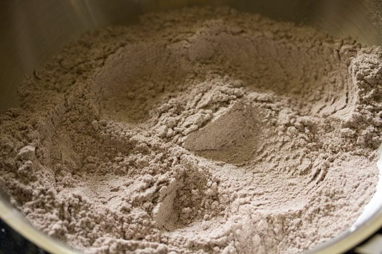
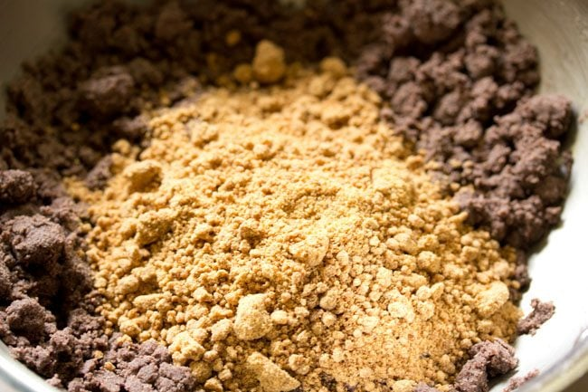
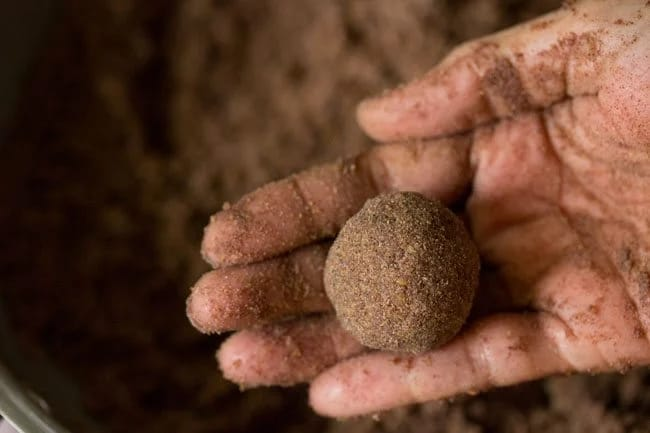
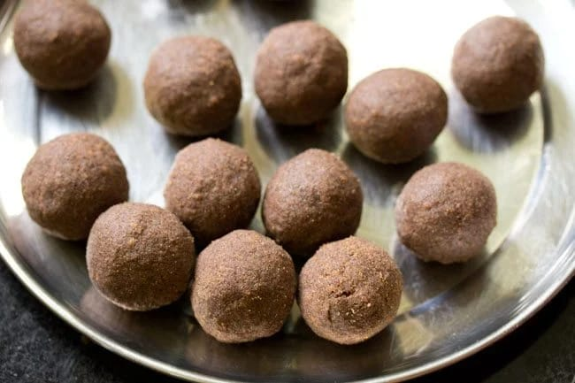
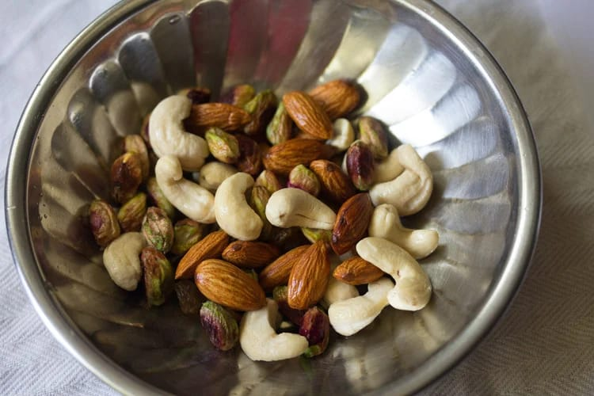
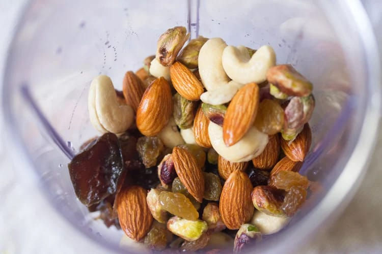
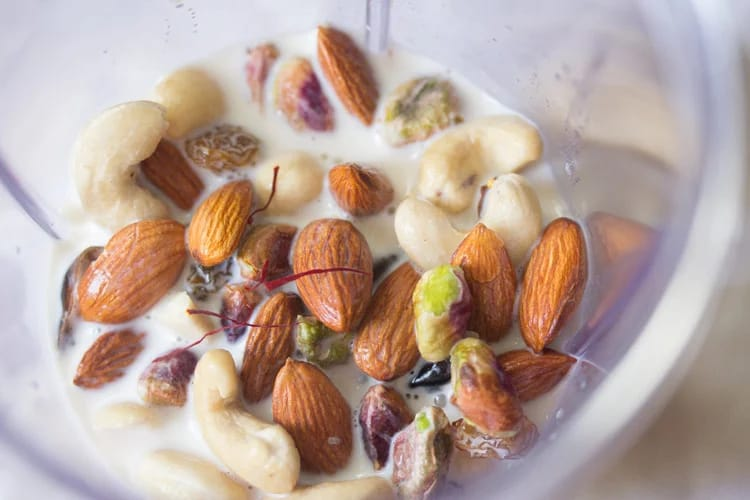
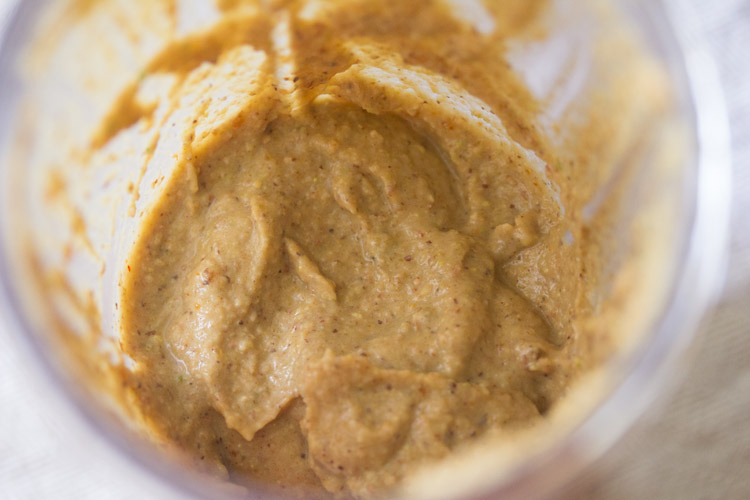
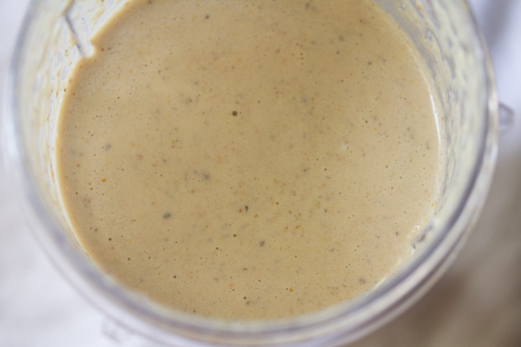

Anugraha.D (Grade- IV)
Jaycess Matriculation Higher Secondary School
Anugraha.D (Grade- IV)
Jaycess Matriculation Higher Secondary School
Simple, wholesome laddus made with ragi flour, jaggery and ghee — high in calcium, fibre and natural energy.

Heat a pan on low flame. Add 1 cup ragi flour and roast for 6–8 minutes until aromatic. Stir continuously to avoid burning.

Turn off the heat. Add ¾ cup powdered jaggery and mix well so the jaggery blends into the warm flour. If needed, add 1 tsp warm water to help melt the jaggery.
While warm, take small portions and press between palms to shape round laddus. Add a little ghee if mixture is dry.
Let laddus cool completely. Store in an airtight container for 7–10 days at room temperature.Almond • Cashew • Raisins • Pista • Boiled Milk — Fig & Dates optional

Place the almonds, cashews, pistachios and raisins in a small bowl. Cover with warm water and soak 20–30 minutes to soften. (If you're short on time you can skip soaking, but soaked nuts blend creamier.)
Put the soaked nuts, raisins, (and dates/figs if using) into the blender jar.
Add 500 ml boiled (and slightly cooled) milk to the blender.
Add a pinch of cardamom powder or a drop of vanilla. Add honey or jaggery only if you want extra sweetness — dates already sweeten the drink.
Blend on high for 45–60 seconds until very smooth and slightly frothy. If it's too thick, add 50–100 ml more milk and blend again.